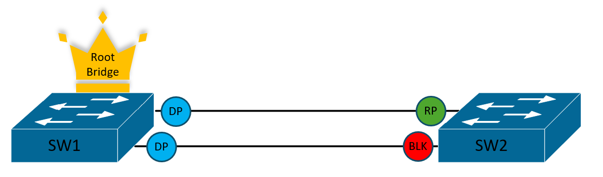

How Spanning Tree Protocol works
By now, it should be obvious that we really don't want loops in our networks. We know Spanning Tree Protocol is
perfect for eliminating loops, but how exactly does it work?
There are three IEEE standards of Spanning Tree Protocol:
- Spanning Tree Protocol (STP) - 802.1D
- Rapid Spanning Tree Protocol (RSTP) - 802.1w
- Multiple Spanning Tree Protocol (MSTP) - 802.1s
This section is going to focus on the fundamentals of STP. The differences between STP, RSTP, and
MSTP will be explained in the next section.
We are going to look at another scenario: Two switches connected by two links, with a PC
connected to each switch. The network engineer who designed this network wanted to build in redundency, if one of
the links were to fail, traffic could continue to flow between the switches and PCs.

Given this scenario, why would we need STP here?
Here's another image of our scenario, this time with STP enabled on both switches:

Take a look at SW2's F0/4 port — the orange circle represents the port is in a blocked state.
Now, if PC1 were to send another ARP request, SW1 would receive and flood the frame out both F0/1 & F0/2
interfaces. SW2 would receive the frame on both f0/3 & F0/4, but because F0/4 is in the blocked state, it would
simply discard it. The frame received on F0/3 would be flooded out F0/5 to PC2, but it would not be flooded out
F0/4 due to it being in the blocked state, this eliminates the loop entirely.
How Spanning Tree decides port roles/states
Root Bridge Election
For Spanning Tree Protocol to work, it needs a leader — or more technically it needs a Root
Bridge.
Root Bridges are chosen through an election process based on a value called the Bridge ID. Each
Switch using STP has a Priority Value, which is always in a multiple of 4096 and can range from 0 - 61440. By
default, most
Switches start with the Priority value of 32768.
If you're like me when learning this for the first time, you might immediately think:
"Won't that make both Switches in this scenario tie?"
"How will it choose the Root Bridge if both priority values are the same?"
That's where STP's tie breaker comes in. The Bridge ID is made up of two parts — The Priority
Value and the Switches MAC Address.
If two switches share the same priority value, the one with the lowest MAC Address becomes the Root Bridge.
All this information is shared between Switches using BPDU's (Bridge Protocol Data Units). The
most common type of BPDU is the Hello BPDU, which contains the following information:
- Root Bridge ID - The Bridge ID of the Switch the sender believes is the Root Bridge. (When a switch is first powered on it assumes itself to be the Root Bridge until it hears otherwise).
- Senders Bridge ID - The Bridge ID of the Switch sending the Hello BPDU.
- Senders Root cost - The cost for the sender to reach the Root Bridge (this will be explained shortly).
- Timer values on the root switch - Timers such as the Hello timer, MaxAge timer, and Forward delay timer (these will be explained shortly).
Root Ports
A Root port — maybe unsurprisingly — is a port on a switch with the lowest cost to reach the Root
Bridge.
Each switch in the STP topology will have one Root Port, except the Root Bridge itself, since
it's already at the root.
A ports cost to reach the Root Bridge is calculated based on the Hello BPDU's it receives.
The Root Bridge advertises it's cost to get to the root as 0.
When SW2 Receives that BDPU, it takes the advertised cost of (0) and adds it's own interface
cost, which is
dependant on the speed of that link. For example, if F0/3 has a cost of 10 and F0/4 has
a cost of 100, the lowest cost to the root would be through F0/3 making that the Root Port on SW2.
there were a third switch, SW2 would
send it's own Hello BPDU advertising it's current cost to the root as (10). The next switch would start with the
advertised cost of (10) and add it's own port costs to determine it's own root port.
